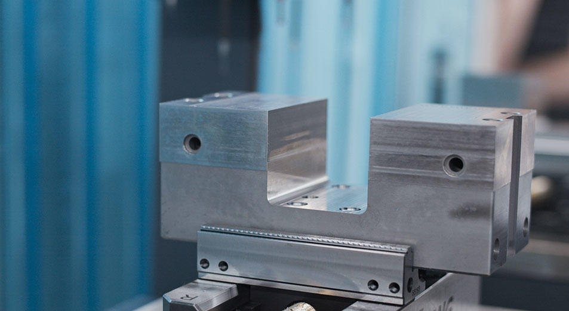
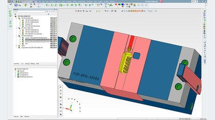
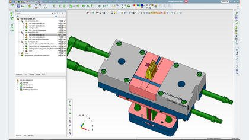
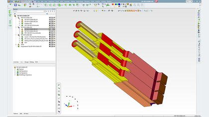
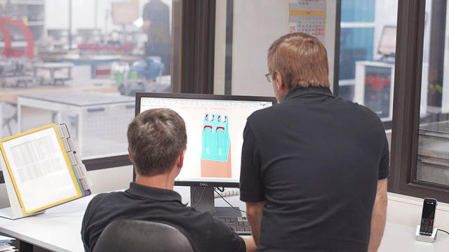
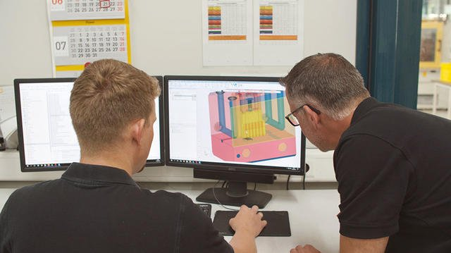
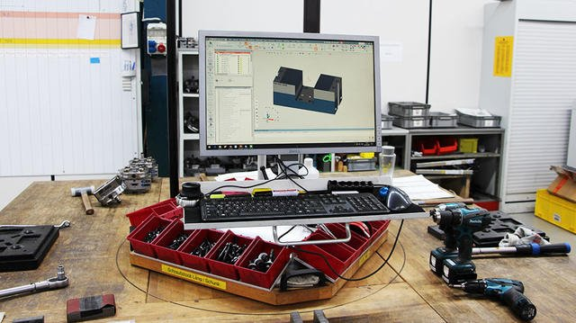
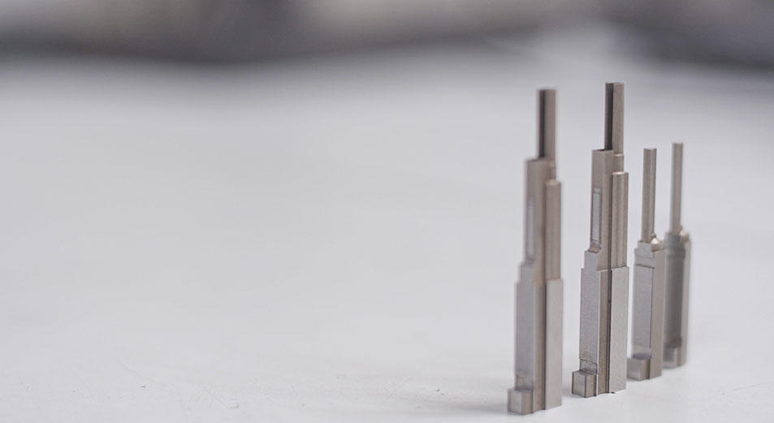
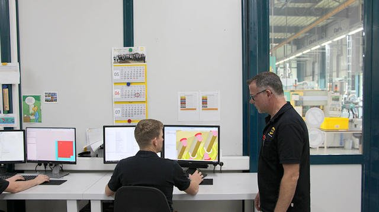
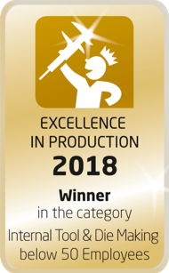

HERAUSFORDERUNG
Verbesserung der Produktionsqualität und -effizienz durch Verbesserung der Datenintegration während des gesamten Formenbau-Prozesses
LÖSUNG
Durchgängige CAD-/CAM-Software Cimatron® von Cimatron für das Design und die Fertigung von Gussformen
ERGEBNISSE
- Verringerte Durchlaufzeiten und höhere Produktionseffizienz.
- Eliminierung von Datentransfer-Fehler und erhöhte Prozess-Sicherheit.
- Verbesserte Werkzeug-Qualität.
HARTING Applied Technologies, eine eigenständige Gesellschaft innerhalb der HARTING Technologiegruppe mit Hauptsitz in Espelkamp, Deutschland, ist auf anspruchsvollen Werkzeugbau spezialisiert. Mit 49 MitarbeiterInnen entwickelt, konstruiert und fertigt das Unternehmen Spritzgussformen, Druckgussformen, Stanz-Biegewerkzeuge sowie Sondermaschinen. Alle Kunden kommen aus der HARTING Gruppe, das Unternehmen arbeitet also rein für interne Kunden.
HARTING setzen Cimatron für die Konstruktion und Fertigung von hochpräzisen Formen in Ein- und Mehrkomponententechnik ein. Mit Cimatron konnte eine hohe Datendurchgängigkeit im gesamten Produktionsprozess erreicht werden.
Vor dem Wechsel zu Cimatron verwendete HARTING andere Softwarelösungen (SOLIDWORKS für CAD und I-deas für CAM), bei denen die Datenintegration fehlte. Eine mangelnde Datenintegration zwischen Softwaresystemen führt im Allgemeinen zu Produktionsabfällen aufgrund von Datenübertragungsfehlern zwischen einzelnen Produktionsschritten. Bei HARTING führte dies zu einer Reihe von Problemen, die sich negativ auswirkten.
Auswirkungen auf die Produktionszuverlässigkeit und die Vorlaufzeiten, die wichtige finanzielle Faktoren für ein Unternehmen sind, das als Profit-Center innerhalb einer Unternehmensgruppe hohen Qualitäts- und Lieferanforderungen genügen muss.

Optimierte Prozesse im Formenbau
Durch den Einsatz der dedizierten Automatisierungs-Funktionen von Cimatron für die Konstruktion, das Elektroden-Design und die NC-Programmierung, konnte HARTING den gesamten Prozess des Formen- und Werkzeugbaus optimieren. Dies hatte positive Auswirkungen auf die Werkzeugqualität, reduzierte den Ausschuss und auch die Lieferzeiten wurden durch Automatisierungen beschleunigt.
Andreas Weiß, Fertigungsleiter bei HARTING Applied Technologies, ist von der Arbeit mit Cimatron begeistert: „Die Einführung von Cimatron hat unsere maßgeblichen Probleme im Erodier-Bereich sehr schnell lösen können, die uns zuvor ganze 12 Jahre lang herausgefordert hatten.”



Mit der Integration aller Cimatron-Module wurde eine Daten- und Prozessdurchgängigkeit in der gesamten Wertschöpfungskette erreicht – das ist für uns der wesentliche Vorteil, den wir dank Cimatron erreichen.
Beschleunigte Lieferzeiten
„Der Sprung zu QuickElektrode war ein großer Fortschritt zum bisher von uns genutzten System,” erinnert sich Weiß. “Es bot schon etliche Vorteile wie das saubere und verlässliche Arbeiten mit den Daten und Inkludieren aller Positionsdaten in den Zeichnungen.”
Da nunmehr lediglich ein System zur Konstruktion und Ableitung der Elektroden im Einsatz ist, kann HARTING Workflows parallelisieren. Die Programmierung kann nun etwa zwei Wochen früher beginnen, bevor die Konstruktion finalisiert ist. Dies trägt zur Reduzierung der Durchlaufzeiten bei.
„Hier wurde die erste Datendurchgängigkeit erreicht: Es standen nun in Cimatron konstruierte Elektroden zur Verfügung, die CAM-Software war einsatzbereit und der Elektrodenfräsprozess bereits durchgängig“, erinnert sich Weiß. „Die Elektrodendaten konnten zudem direkt mit allen Informationen genutzt werden.“



Reducing Manual Work and Errors
Reduzierung von manuellen Arbeiten und FehlernNachdem alle Anwendungsfelder bei HARTING nun komplett mit Cimatron abgedeckt werden, startet die Fertigung von Aluminium- und Zinkdruckgusswerkzeugen mit der Konstruktion. Und, im Gegensatz zu allen anderen CAD/CAM-Software-Lösungen, Cimatron agiert Parameter-getrieben, was den Konstrukteuren erhöhte Flexibilität in der Modifizierung und Skalierung der Modelle bietet.
Bei HARTING werden im CAD-Modul alle Flächen eingefärbt, was Berührungsflächen, Freiflächen und Formkonturen klar voneinander unterscheidet. Auf diese Weise können Fehler reduziert, wenn nicht sogar eliminiert werden.
„Durch die Datendurchgängigkeit in Kombination mit einem von uns selbst entwickelten Farbentoleranzsystem basierend auf dem Einfärben von Flächen sind wir in der Lage, alle benötigten Informationen für die Fertigung der Bauteile – sowohl Toleranzen und Fertigungsverfahren – in den Daten zu integrieren“, erklärt Weiß.
Damit wird zugleich die Vorstufe zur zeichnungslosen Fertigung erreicht. Es ist also kaum noch gedrucktes Papier in Verwendung, die Fertigung ist damit „papierarm“. Der Konstruktionsaufwand ist bei der papierarmen Fertigung bei HARTING deutlich geringer: Es gibt weniger händische Arbeit, der Informationsgehalt ist hingegen höher.
Verbesserte NC-Programmierung und Werkzeug-Qualität
Mit dem CAM-Modul beginnt bei HARTING die Programmierung, wonach die Erodier- und Fräsvorgänge starten können. Jede beliebige NC- und Erodiermaschine kann mit Cimatron programmiert werden.
Ein weiterer Vorteil durch den Wechsel zu Cimatron: die Kollisionssimulation bei 5-Achs-Bearbeitetungen, die vorher mit den anderen Software-Lösungen nicht möglich war.
Weitere Vorteile sind eine verbesserte Werkzeugqualität und eine Verlängerung der Lebensdauer von Schneidwerkzeugen bei zuverlässiger Bearbeitung.

Stufenweiser Umstieg auf Cimatron und hervorragendes Training
Um Produktivitätsverluste zu vermeiden, implementierte HARTING Cimatron in Phasen: Zuerst die Cimatron NC-Lösung für die Programmierung von Fräsmaschinen (CAM), gefolgt von der QuickElektroden-Erweiterung und dann die Cimatron-Lösung für den Formenbau (CAD).
Die Mitarbeiter von HARTING nahmen an einer umfassenden Cimatron-Schulung teil, die von Cimatron Technologies GmbH angeboten wurde, um schnell in die Materie einzusteigen und eine reibungslose Implementierung zu gewährleisten. Dank dieser Schulung sowie der Folgeschulungen sei der Umstieg leicht gefallen, sagt Weiß: "Wir erhielten eine individuelle Schulung, die genau auf die Bedürfnisse von HARTING Advanced Technologies zugeschnitten war."


Industry Excellence
HARTING erlangte den Kategorie-Sieg im Wettbewerb Excellence in Production in 2014, 2016 und 2018. Die Jury von „Excellence in Production“ lobte beim Sieg des Unternehmens 2018 dessen hohen Automatisierungsgrad: „Dieser zeigt sich bei wesentlichen Bearbeitungsprozessen wie dem Fräsen, dem Senk- und Drahterodieren“, wozu der Einsatz von Cimatron einen Beitrag leisten konnte.
Für Weiß ist Cimatron – auf die komplette Wertschöpfungskette bezogen – die beste Lösung für die Belange von HARTING Applied Technologies.: „Konkurrenzprodukte müssten die Datendurchgängigkeit von Cimatron erst einmal erreichen."